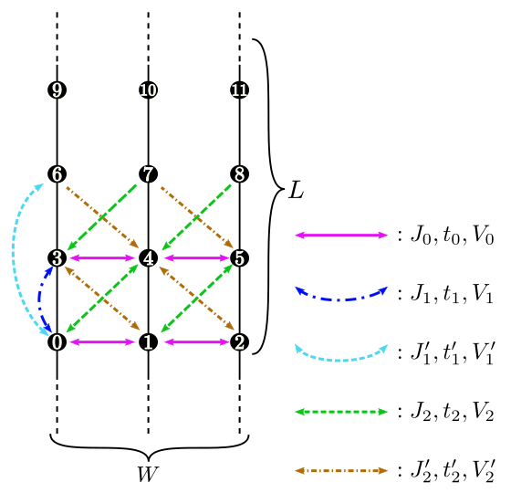

Description : The length of the chain is specified with this
parameter.
Fig. 4.1 Schematic illustration of (a) one-dimensional chain lattice, (b)
two-dimensional square lattice, and (c) two-dimensional triangular
lattice. They have \(t\), \(V\), and \(J\) as the
nearest neighbor hopping, an offsite Coulomb integral, and a
spin-coupling constant, respectively (magenta solid lines); they
also have \(t'\), \(V'\), and \(J'\) as the next
nearest neighbor hopping, offsite Coulomb integral, and
spin-coupling constant, respectively (green dashed line).¶
Fig. 4.2 Schematic illustration of the anisotropic honeycomb lattice.
The first/second/third nearest neighbor hopping integral,
spin coupling, and offsite
Coulomb integral depend on the bond direction.¶
Fig. 4.3 Schematic illustration of the Kagome lattice.¶

Fig. 4.4 Schematic illustration of the ladder lattice.¶
Description : The length of the ladder is specified with this
parameter.
W
Type : Integer
Description : The number of the ladder is specified with this
parameter.
Fig. 4.5 Shape of the numerical cell when
\({\boldsymbol a}_0 = (6, 2), {\boldsymbol a}_1 = (2, 4)\) in the triangular
lattice. The region surrounded by \({\boldsymbol a}_0\) (magenta dashed
arrow) and \({\boldsymbol a}_1\) (green dashed arrow) becomes the cell
to be calculated (20 sites).¶
In these lattices, we can specify the shape of the numerical cell by
using the following two methods.
W, L
Type : Integer
Description : The alignment of the original unit cells (dashed
black lines in Fig. 4.1 - Fig. 4.3 ) is specified with this parameter.
a0W, a0L, a1W, a1L
Type : Integer
Description : We can specify two vectors
(\({\boldsymbol a}_0, {\boldsymbol a}_1\)) that surround the numerical cell
(Fig. 4.5 ).
These vectors should be specified in the fractional coordinate.
If we use both these methods, \({\mathcal H}\Phi\) stops. When
model=SpinGCCMA, we can use only the former.
We can check the shape of the numerical cell by using a file
lattice.gp which is written in Standard mode. This file can be read
by gnuplot as follows: